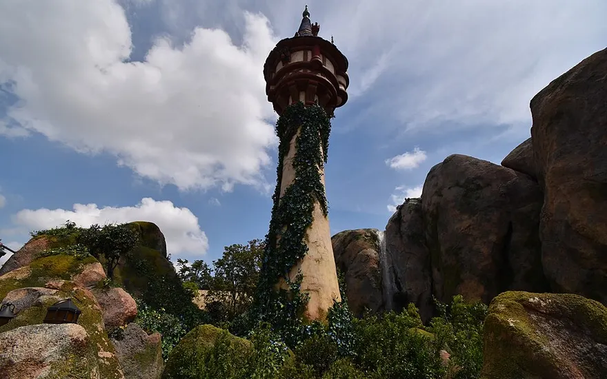
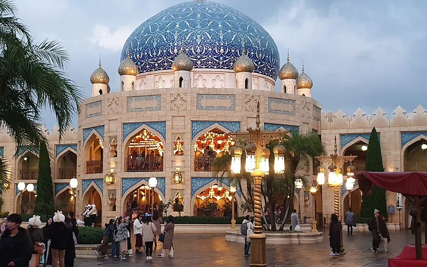
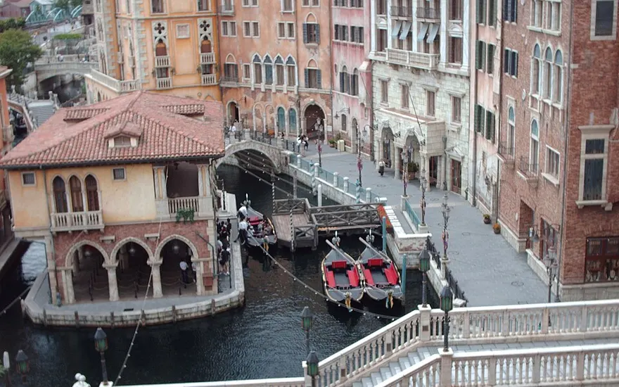
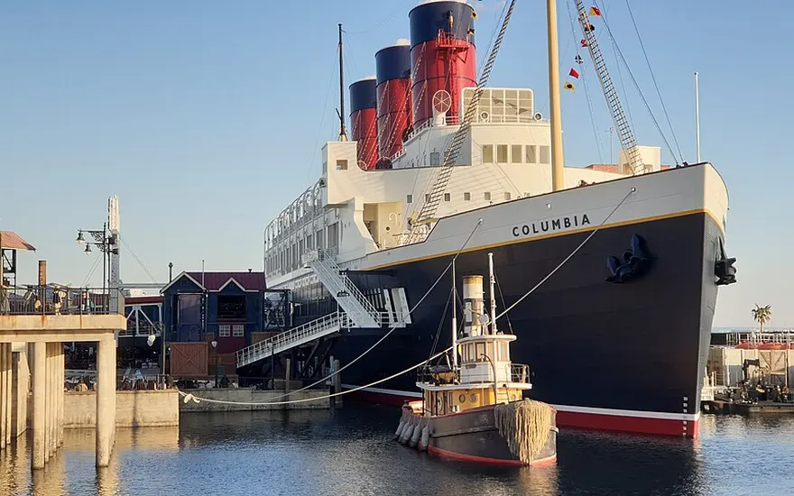
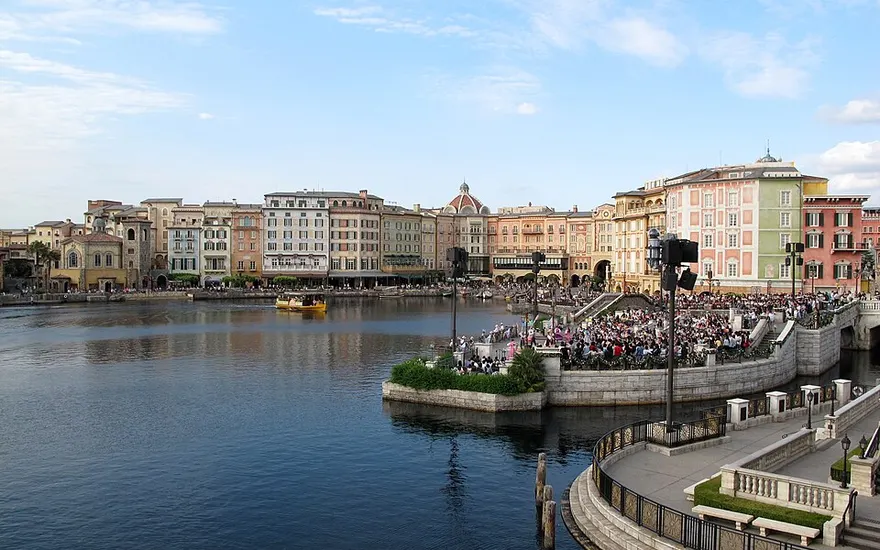
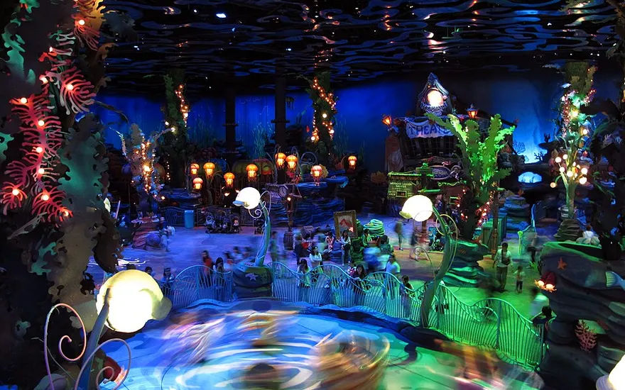
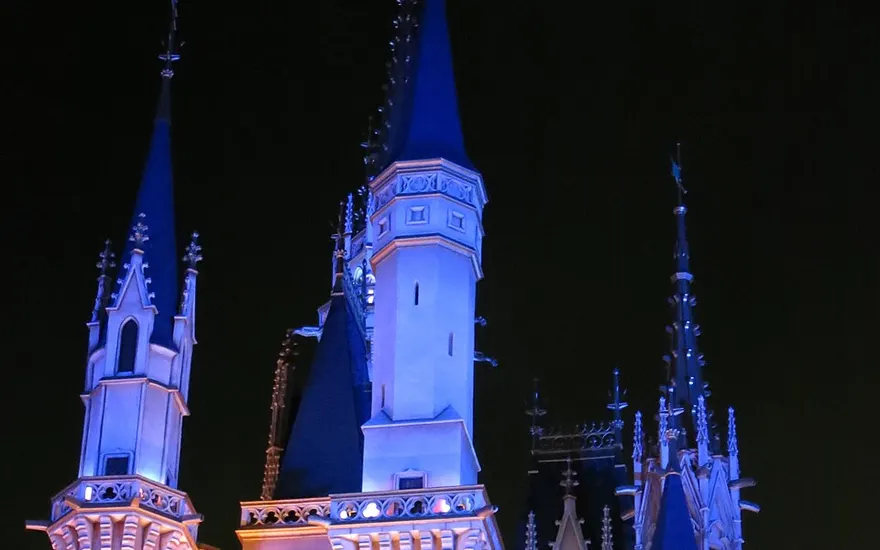
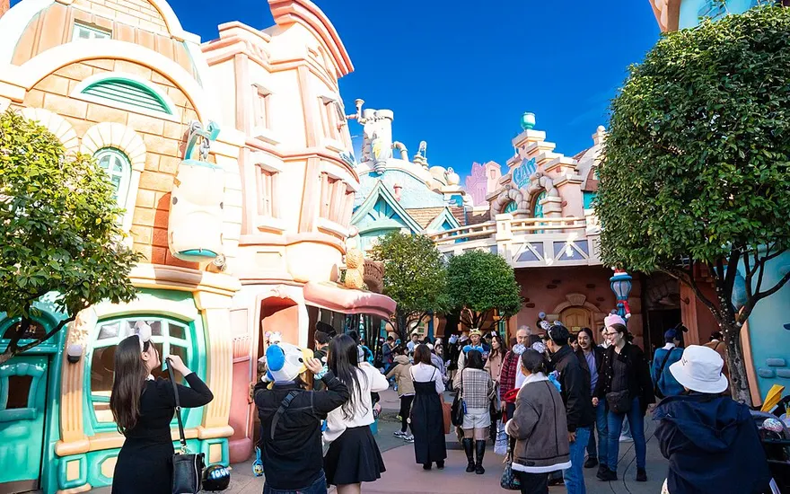
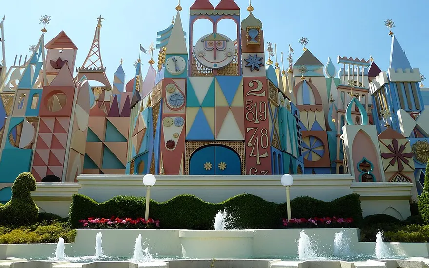
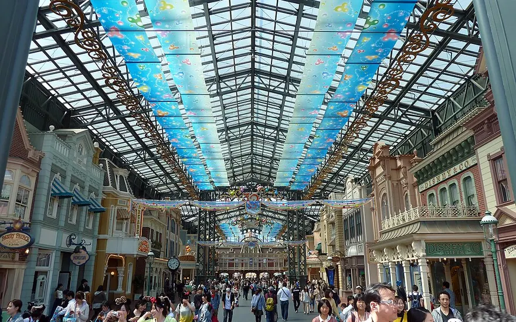

Which Park?
まずどっちのパーク？
DisneySea
ディズニーシー
海外旅行風・シック系ならこっち。背景のバリエーションが圧倒的で、通路が広く人が写り込みにくい。写真メインなら推し！
Disneyland
ディズニーランド
Y2K・ポップ・カラフル系ならこっち。トゥーンタウンとシンデレラ城が強い。
DisneySea
ディズニーシーの映えスポット
ファンタジースプリングスは今は誰でも入れる！
2025年4月からエリア入場制限が廃止。パークチケットだけで散策OK（並ぶのはアトラクションに乗る時だけ）。古い記事の「パス必須」情報は無視してOK。

ファンタジースプリングス
最優先世界観◎
アナ雪の氷の城、ラプンツェルの塔とランタン、ピーターパンの渓谷。今いちばん新しくて強いエリア。
ラプンツェルの森は夕方〜夜のランタン点灯後が最強。アナ雪エリアは日中の順光で。

アラビアンコースト
海外風
パステルの壁と幾何学模様のドア。海外旅行みたいな引きの全身写真が撮れる。
引き（全身）／夕方の西日で色が鮮やかに。

ヴェネツィア・サイド（運河）
大人っぽ
ゴンドラ乗り場付近の橋と街並み。シックで大人っぽい雰囲気。
寄り〜中景／夕方〜街灯が点く時間帯がエモい。

S.S.コロンビア号（デッキ）
爽やか
船上からの絶景＆レトロな船体バック。青空との相性抜群。
引き（全身/半身）／青空の日中に。

メディテレーニアンハーバーの路地
フード映え
ザンビーニ裏手の洋風の小道とカラフルな壁。カチューシャや食べ物を撮るのに最適。
寄り（バストアップ/手元）でフード＆小物を主役に。

マーメイドラグーン
雨の日OK
屋内でピンク×紫の世界。雨でもむしろ映える救済スポット。
天候・時間帯を問わず安定。雨プランに組み込んで◎
Disneyland
ディズニーランドの映えスポット

シンデレラ城（裏側）
穴場画角
フェアリーテイル・ホール前。表より人が少なく、青い屋根と細部がきれいに入る。
下から見上げる煽りで。日中 or ライトアップ後。

トゥーンタウン
ポップ
カラフルな扉と車。Y2Kテイストや元気ポーズにぴったり。
中景（膝上〜全身）／日中の明るい時間に。

イッツ・ア・スモールワールド（外観）
パステル
パステルピンク＆ブルーの幾何学背景。コーデとカチューシャが映える。
寄り〜中景／直射日光を避けた順光で。

イーストサイド・カフェ横の小道
穴場
ワールドバザールのレンガ調レトロ空間。人通り少なめで撮りやすい。雨の日も屋根があって安心。
全身/後ろ姿。時間帯を問わず安定。
スポットの場所をマップで確認する →
Technique
映え度が上がる撮影テク
- 広角0.5倍＋スマホ逆さ持ちで低い位置から見上げて撮る → 脚長効果◎
- カチューシャや限定フードを手前にかざしてポートレートモード → 背景ボケで主役感UP
- 逆光は避けて、建物の日陰のやわらかい光で撮ると肌がきれいに写る
- 開園直後＆パレード中は人気スポットがスカスカ。撮影のゴールデンタイム
- 人気の限定フード＆カチューシャは午前中に確保（昼過ぎ売り切れあり）
- キャストさんに頼めば引きの全身もきれいに撮ってもらえる（遠慮しなくてOK！）
Plan
1日のざっくり作戦
- 開園〜1時間：いちばん撮りたいスポットへ直行（人少なめ＆朝のやわらかい光）
- 午前：カチューシャ＆フード確保 → フード映え写真
- 昼：パレード/ショーの時間帯に空いたスポットを回収
- 夕方〜夜：西日タイム→ランタン/街灯点灯タイムがラストスパート
- 雨の日：シーはマーメイドラグーン、ランドはワールドバザールへ避難でOK
Heat Safety
熱中症対策（8月の猛暑対策）
暑さに弱い体質（お風呂やサウナでのぼせやすいタイプ）で熱中症経験もある場合、8月上旬の東京・ディズニーはかなり危険な環境です。
気温35℃超・湿度70%超・照り返しで体感は40℃近く。「水分を取る」「無理しない」だけでは足りないので、体温を物理的に上げない・屋外に身を晒さないための装備と行動設計を。
1. 物理的冷却で「深部体温」を下げる
最重要装備
のぼせやすい人は体内に熱がこもりやすいタイプ。表面を冷やすより、深部体温を下げることに注力する。
- 手のひら冷却（AVA血管）：手のひらには体温調節用の血管があり、15℃前後で冷やすと全身の血温が効率よく下がる。冷えすぎない保冷剤や冷たいペットボトルを握る、冷却プレート付きハンディファンやペルチェ式ネッククーラーも◎
- アイススラリー：入園前・屋外に出る直前に1本。胃の中から深部体温を直接下げて、体温上昇までの猶予時間をつくる（ポカリ等の市販品でOK）
- 首元・脇下：ネッククーラーや冷感タオルでのピンポイント冷却は必須
2. 11時〜15時は屋外に立たない
行動設計
いちばん危険な昼過ぎの時間帯は、屋外での移動・待機を完全に回避する行程に。
- 昼は完全退避：イクスピアリなど完全屋内施設で長めのランチ休憩を取る
- お金で待ち時間を買う：DPA（ディズニー・プレミアアクセス）とプライオリティパスをフル活用して、屋外で30分以上並ぶ状況をゼロに
- 予約を軸に組む：立ち見のショー待ちは避け、屋内ショー（予約制）とプライオリティ・シーティング対応の室内レストランを中心にスケジュールを組む
3. 遮熱・服装で物理防御
装備
- 完全遮光日傘：UVカットではなく「遮熱・遮光率100%」タイプ（サンバリア100、芦屋ロサブラン、Wpc. IZAなど）。傘の下の体感温度が数度下がる
- 服装：風が通るゆったりシルエット／熱を吸う黒・濃色は避けて白・淡色／吸汗速乾素材（ポリエステル混紡など）
4. 水分・電解質補給の設計
脱水対策
熱中症経験がある人は、本人が喉の渇きを感じる前に脱水が進んでいる可能性がある。
- 「水だけ」「お茶だけ」は厳禁：大量に汗をかいた状態で水だけ飲むと血中の塩分濃度が下がり、水中毒やこむら返りの原因になる
- 経口補水液＋塩分タブレット：基本はスポーツドリンクか経口補水液（OS-1など）。水しか飲めない場合は塩分タブレットや梅干し・塩飴を必ずセットで
優先順位まとめ
- 昼（11〜15時）は屋内に退避（最重要）
- アイススラリー＋手のひら冷却で体温の上昇を抑える
- 有料パスを活用して屋外の行列を徹底的に避ける
「ちょっとクラッとする」「気持ち悪い」と口にした時点で、すでに中等症近くまで進んでいる可能性があります。少しでも違和感が出たら、すぐに救護室（中央救護室）へ向かうか、クーラーの効いたショップに駆け込むこと。